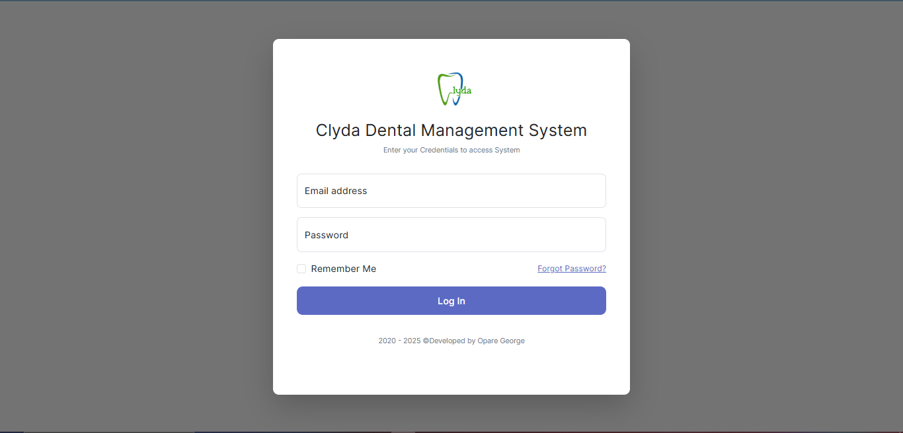
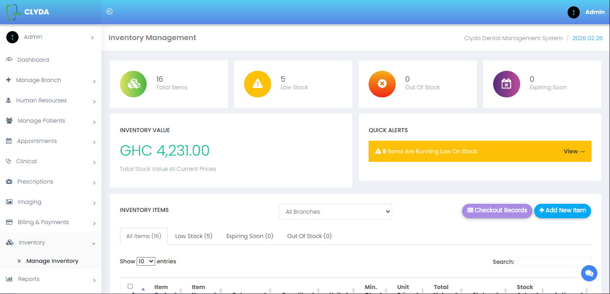
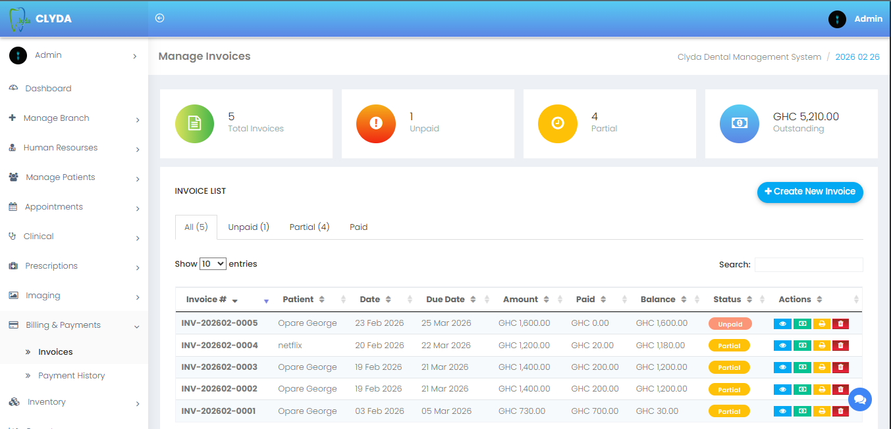
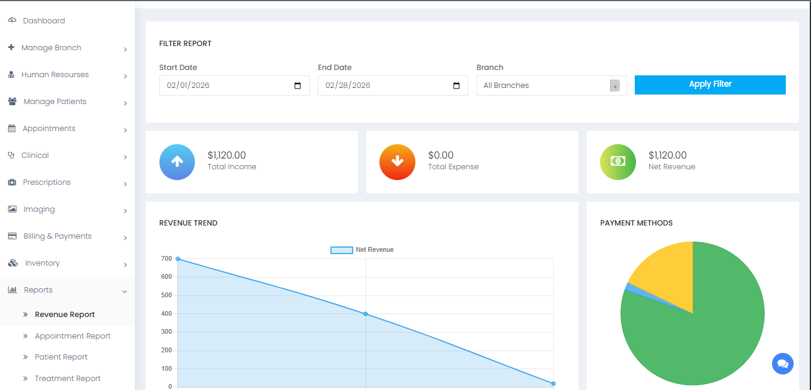
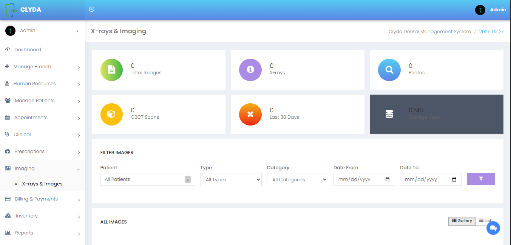

Clinical Module
Document dental examinations, treatment plans, diagnoses, and clinical notes on a per-patient basis.
Blog case study / Dental care
A clinic website, appointment workflow and patient management system built for a dental practice in Ghana.

The project
Bring online bookings, patient records and daily clinic workflows into one coordinated service.
When Clyda Dental asked TechWaiv to modernize clinic operations, they needed more than a website. They needed a digital system combining online bookings, patient records and clinic workflows in one place.
The solution brings together a patient-facing website and an internal dental management system. Local user needs, mobile-first access and straightforward workflows for receptionists and dental assistants shaped the experience.
Problem / Approach
What we built
A clear public website helps patients find care, while the management system organizes the work behind each visit.
Document dental examinations, treatment plans, diagnoses, and clinical notes on a per-patient basis.
Responsive pages and workflows for patients using phones, tablets and desktop devices.
Register, update, and manage complete patient profiles including medical history, treatment records, and contact information.
Book, confirm, reschedule, or cancel appointments with live status tracking. Visual appointment overview for staff efficiency.
Generate invoices, record partial payments, and track outstanding balances. Full payment history per patient.
Track dental supplies, consumables, and instruments across branches with low-stock alerts and stock value reporting.
Create and manage medication prescriptions linked directly to patient records and treatment plans.
Revenue trends, appointment analytics, patient activity, treatment summaries, and inventory reports, all filterable by date and branch.
Practice workflow
Technology and delivery
The selected stack supports a responsive patient-facing website and a structured management system for clinic data and appointments.
System preview
Dashboard, staff access, supplies, billing, reporting and clinical imaging screens.





Results / Local impact
Learn more
Explore TechWaiv's website and management system services for Ghana businesses.
Building for healthcare reinforced the value of designing around local user needs, business outcomes and practical daily workflows.
Contact TechWaiv to design a digital solution for your clinic or Ghana business.